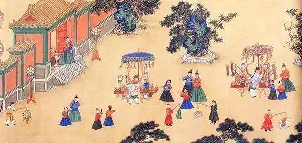

|
|  | 十五夜观灯 锦里开芳宴，兰缸艳早年。 缛彩遥分地，繁光远缀天。 接汉疑星落，依楼似月悬。 别有千金笑，来映九枝前。 |
词句注释 ①锦：色彩华丽，这里指色彩华丽的花灯，正月十五有放花灯的习俗。 ②开芳宴：始于唐代的一种习俗，由夫妇中的男方主办，活动内容一般为夫妻对坐进行宴饮或赏乐观戏。宋罗烨《醉翁谈录》“常开芳宴，表夫妻相爱耳。”开，举行。 ③兰缸：也作“兰釭”，是燃烧兰膏的灯具，也常用来表示精致的灯具。 ④早年：年轻的时候，这里指年轻人。 ⑤缛彩：也作“縟采”，绚丽的色彩。 ⑥汉：天河，银河。《迢迢牵牛星》中有“皎皎河汉女”，即为银河中的织女星。 ⑦依：靠着，依靠。《说文》依，倚也。 ⑧千金笑：指美丽女子的笑。 ⑨九枝：一干九枝的灯具，枝上放置蜡烛或加灯油，也泛指一干多枝的灯。 |
|
白话译文 在色彩华丽的灯光里，夫妻举办芳宴玩乐庆祝，精致的灯具下，年轻人显得更加光鲜艳丽。 灯光绚丽的色彩遥遥看来好像分开了大地，繁多的灯火远远的点缀着天际。 连接天河的灯光烟火好像是星星坠落下来，靠着高楼的灯似乎月亮悬挂空中。 还有美丽女子的美好笑容映照在九枝的火光下。 |
|
唐诗学习网 Copyright© 2018 All Right Reversed
|